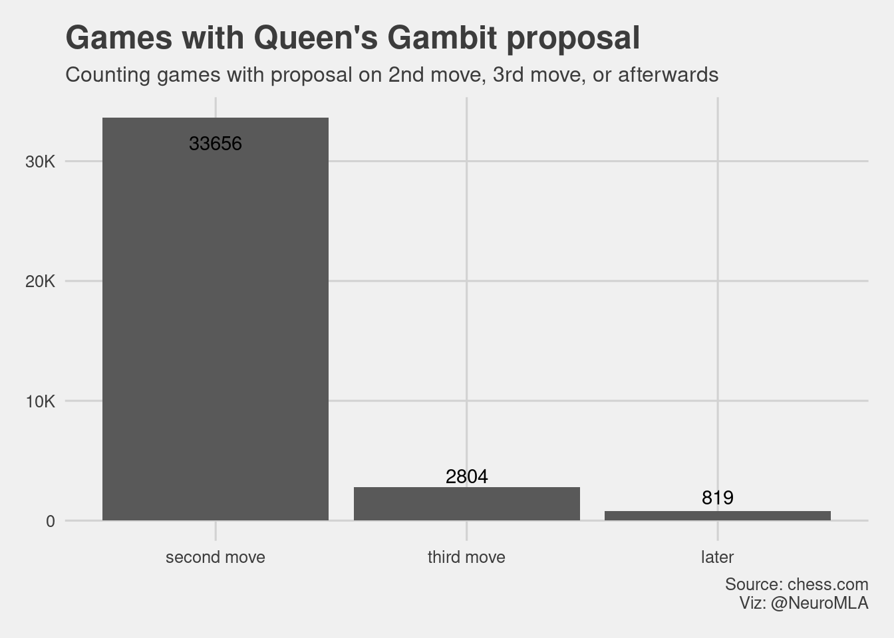
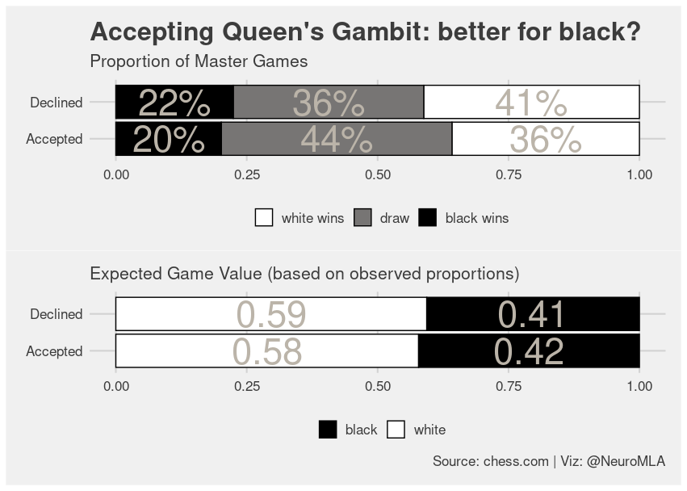
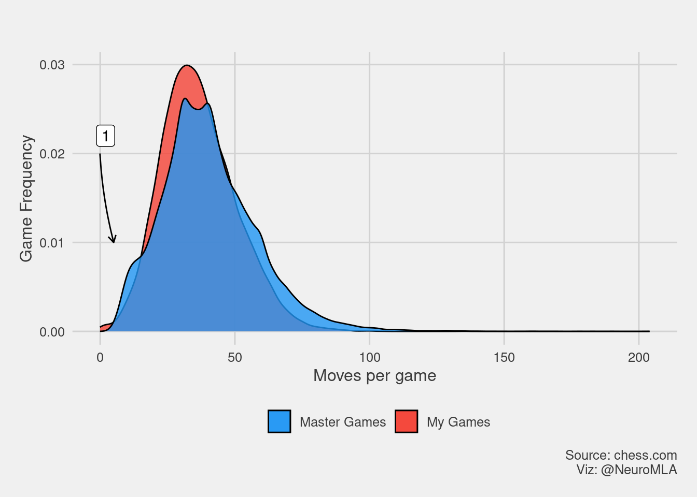

![]()

I love games. I enjoy the fun in many formats: cards, boards, consoles. Yet, over the years, chess has consolidated as the game I play most often, and it is likely the only game I both really like and can limit the amount I play1.
It’s been a couple of months since I noticed something weird going on in my games, a sort of disturbance in the force. I felt I was playing a type of position called Queen’s Gambit way more often than normal.
Because there’s currently a sort of chess mania fueled by the very successful new series that gets the name from the gambit2, I thought it would be pretty easy to find out whether the data reflected my gut feeling.
Too Long — Didn’t Read
I apologize for writing long posts. Be my guest and jump directly to the popularity of the Queen’s Gambit across time by clicking here
The data
To do any sort of analysis, I needed data. Although there are probably many places where I could have found it, www.chess.com has a large dataset and it is somewhat accessible (if you can parse websites, see how). It is also the place where I play, so the dataset of my games comes from there.
Throughout this post, I will be using two datasets:
- Master Games: games played by Chess Masters where Queen’s Gambit is played.
- My games: All my games at chess.com, spanning from 2012 to January 2021.
Let’s minimally explore the dataset of Master Games for the sake of DataViz 📈.
I first started looking at a dataset with 37287 entries, from games played between chess Masters (aka Master Games) that open with Queen’s Gambit. Games were played between 2000 and 2020. After a bit of data cleaning, there were a few quick things I wanted to look at.
Below, you can find a violin plot of the number of moves a chess match between masters normally has.
If you are curious, here’s a table with summary statistics for the number of moves in the games by result.
| Result | min | q25 | median | mean | q75 | max |
|---|---|---|---|---|---|---|
| white wins | 5 | 31 | 40 | 41.85 | 50 | 161 |
| draw | 2 | 21 | 34 | 36.84 | 49 | 204 |
| black wins | 4 | 33 | 41 | 43.82 | 53 | 183 |
What is this “Queen’s Gambit”, anyway?
Generally speaking, a gambit is a position where both players stand to exchange pieces. In the particular case of the Queen’s Gambit, we are most often referring to this position (although see further below).

When does it happen?
Queen’s gambit is an opening, this means it occurs early in the game. In this case, the gambit is overwhelmingly proposed on the second move and just a few games develop into a position that is equivalent to the Queen’s gambit later in the game.

Who benefits?
In chess, whoever starts (aka plays white) has advantage. However, Chess Masters are heavily trained in defense, so it’s not a walk in the part for white. It always depends heavily on the initial positions (openings), gambit proposals, and responses (accepted or declined with many variations). In the case of the Queen’s Gambit, the machines predict white is favorite to win, while accepting the gambit increases the likelihood of draws. Interestingly, if we calculate the expected value for black from the observed frequencies, it might be slightly better for black to accept the gambit3.

I wouldn’t treat this tiny increment as something real. It is likely just noise. In reality, Chess Masters decline the Queen’s gambit way more often than they accept it (about 2.6 times more often!).
In fact, if we check with the chess engines, they seldom accept the Queen’s Gambit either. On a personal, totally amateur note, I don’t feel like accepting the Queen’s Gambit, it just doesn’t feel right.
Where do they go?
After the opening, chess games branch into a myriad possible positions. I believe a cool way to see this is to use alluvial plots to visualize how the games evolve in time. It would really be a mess to visualize all moves, so I just focused on certain games and kept it short around proposal/response in regards to Queen’s Gambit. I added the result of the game, just out of curiosity.

As you can see, I focused on the two cases where white moves their pawn to c4 (c4) to actually “propose” the gambit. This is how both situations look on the board.
| 1. d4 d5 2. c4 | 1. d4 Nf3 2. c4 |
|---|---|
|
 |
“Accepting” the gambit means taking the pawn at c4 (dxc4). As we said before, this is the least frequent case, and it is interesting to see that almost none of the Nf6 games go to accept the gambit. It’s also quite telling that the vast majority of Masters respond to Queen’s Gambit with e6. This is how it looks in the board.
| 1. d4 d5 2. c4 e6 | 1. d4 Nf6 2. c4 e6 |
|---|---|
 |
 |
Special case
There’s a special case where games take a bit longer to reach the gambit. These are the games where the second move is Nf3 Nf6. I made the same alluvial plot for these games. For some reason, this position prompts the majority of Chess Masters to accept the gambit.
Thus, if you like to play the gambit as white, and you like the other side to accept it, you should delay your c4 advance just one move.

This is how your board should look like if you want black to accept the gambit.

Popularity
Enough with the chess lingo, show me what I came here for! Alright, alright, don’t bark. Here’s the popularity plot on the Masters Games.

This plot shows that the popularity of the gambit increased dramatically. But my prediction was wrong, the gambit was super popular a few years ago and I didn’t notice anything.
What happened between 2017 and 2019? I don’t really know if the total amount of games just skyrocketed, but it’s possible. Maybe the 2018 world championship had something to do with it. I didn’t parse the full database, so I can’t tell you about the frequency of all games.
What happened in 2020? If you are from the future, I would like to remind you that there was a Global Pandemic on 2020, stay safe whenever you are.
The popularity graph didn’t show what I was expecting to see, but I still trust my gut feeling. It all started just a few months ago, I’m pretty sure that there is something in the data that needs to be unmasked.
Data from 2020 will not reflect my gut feeling easily. First, the pandemic messed up with the tournament schedule. Second, the TV series might be super popular with normal people, but we shouldn’t expect Chess Masters to change the way they open games because of it.
So…what about simple mortals like you and me? Well, my friend, if you made it this far, I trust you to go on with my game database.
My games
First, you should know that I mostly play blitz games (either 3 minutes in the clock at start or 3 minutes with 2 seconds added per move). Nonetheless, it looks like the move distribution of games is quite similar to what we see in Masters games.

There are two places where I see differences. First, Master Games show a bump quite early, even below 20 moves. This is unusual because it takes more moves to break a good defense. We will come back later to this.

Second, there is another bump on longer games. I attribute this to the nature of my skill level. I can’t play much more than an opening and a few attempts on the “middle game”. Most of my games will evolve pretty quickly (either because the clock forces you to be aggressive or because our chess level is not good). It’s often the case that one player makes a crucial mistake and the game evolves fast after that.

There’s another explanation for these differences. If we separate games according to result. We see that Masters games have almost the same shape as mine but, when they get to a draw, they get to it really fast. For us novices, getting a draw is often an accident. Masters deliberately draw, and they do it early.

Drawing is a signal of quality
At my level, drawing a game is not common. For pros, it’s quite the opposite. Something else that draws my attention is that black is really unlikely to win a game. This is similar to other games, like tennis, where the player that serves (aka, starts the game) has a huge advantage.

My openings
In my database, I have all the games I played. Up to February 2021, it was a total of 15130. Yes, I know, a lot, roughly 4.61 per day since 2012. Anyway, I can get all the openings from my games.
I selected the ten most frequent first moves when I am playing white and when I am playing black. You can see that d4 d5 doesn’t appear on the top ten at all when playing white. The only times I face the d4 d5 opening (which might lead to Queen’s Gambit) is when I play black.

How often do I play against the gambit?
The amount I play has not been even over the years, but the frequency of games where I play the gambit seems somewhat marginal and independent of the how much I play.

Marginal proportions are hard to see on a frequency graph, so maybe this graph is a bit more evident. I have played the Queen’s Gambit in roughly 5.0% of the games. The game sample from 2021 might not be big enough to be representative (only January is present).

The small increases in late years are not big enough for me to notice, especially when spread evenly across the year. But what happens if we only look at 2020? The TV series started in October. In November, we see a big jump in the Queen’s Gambit’s frequency!

This is increase is not big. In fact, during November I also played the Scandinavian Defense4 more often. But even so, the Queen’s Gambit got a ~3X jump on November, something that is way more noticeable when going from ~2.5% to ~ 7.5% than a 5-10% increase in an opening that I already play pretty often.

Wrap
This project started with just an intuition and went down the rabbit hole of exploration. It took quite a long time to write (and re-write), but I was a lot of fun to mess around with. I hope you have enjoyed it if you made it this far!
More readings
If you want to read a nice, data rich, post about the “Chess Boom” that the series brought about, check https://www.bloomberg.com/graphics/2020-chess-boom/.
Even if you ask, Chess.com does not give you all the games in your database nicely (probably trying to limit the bandwidth). So I slightly adapted the following script https://github.com/arnsholt/chesscom-games for the purpose of “Gimme all my games with almost no clicks involved!”. It uses the API, so I think it’s all cool :).
I should have probably searched for somebody’s package. Here are some references that might be useful:
- https://github.com/JaseZiv/chessR
- https://github.com/curso-r/chess
Footnotes
However, after reading this post you might believe I’m a bit of a chess junkie 😝↩︎
But mostly because the star is a kick-ass woman.↩︎
I’m using the observed frequencies and calculating one point per win and 0.5 points per draw. This gives the expected values for each player.↩︎
Scandinavian Defense is a position characterized by
1.e4 d5, it’s by far my prefered opening when playing black.↩︎
Reuse
Citation
BibTeX citation:
@online{andina2021,
author = {Andina, Matias},
title = {Queen’s {Gambit}},
date = {2021-02-07},
url = {https://matiasandina.netlify.app/posts/2021-02-07-queens-gambit},
langid = {en}
}
For attribution, please cite this work as:
Andina, Matias. 2021. “Queen’s Gambit.” February 7, 2021.
https://matiasandina.netlify.app/posts/2021-02-07-queens-gambit.